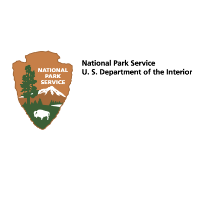

All members of the Fellow Feathers are encouraged to participate in club matters and attend our online Zoom club meetings. Please email our club president if you would like to join in: pres {a t} flyfunston {d o t} org. Once on the list you will be re-invited automatically and can opt-out at any time.
The next club meeting will be held on Thursday, August 5, 2021, at *7:30* pm.
Attention All Clubhouse Members: Per Clubhouse Rules your glider must have either your name or a brass space number tag on it. *Un-identified gliders are subject to impound*
Get your 2021 Funston sticker by mail. More here.
Fort Funston
Fort Funston is one of the best places on the planet to hang glide. Consistently flyable winds year round, easy access from all over the SF Bay Area, a variety of challenging and rewarding weather conditions, convenient top landing, and the near-mythical Funston Convergence make it an all-around favorite.
Hang Gliding at Fort Funston is managed by:
The Fellow Feathers of Fort Funston Hang Gliding Club

Fellow Feathers Ft Funston Webcam Image
The Fellow Feathers of Fort Funston Hang Gliding Club is a partner of
the Golden Gate National Parks.
